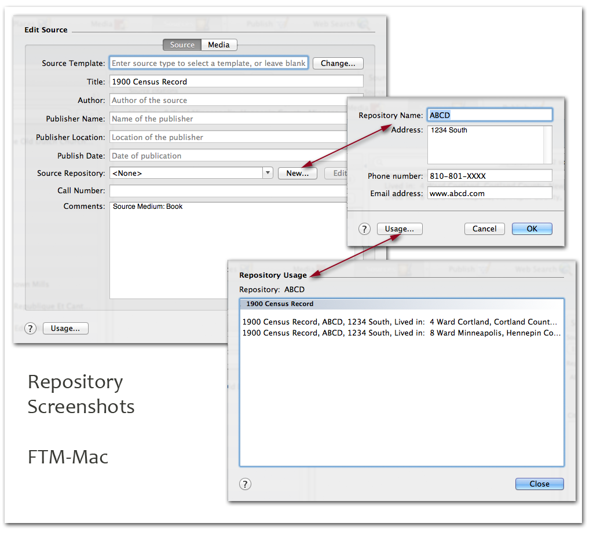

BetterGEDCOM defines repository as "an archive, government office, library, or other facility where research materials are held." [EE, 2007, 828]
PAF5.2 AncestralQuest12.1 FTM TMG7 Legacy7 RootsMagic4 Reunion FamilyHistorian
PAF 5.2
Screen shots?Ancestral Quest 12.1
Screen shots?FTM
FTM-Mac

TMG, v7
Legacy 7
RootsMagic 4
Reunion
Help!!See the Reunion Talk post below for the comment, "... Because Reunion doesn’t maintain a separate record for repositories ...."
http://www.reuniontalk.com/showpost.php?p=23698&postcount=3
Roger??
FamilyHistorian 4

Screen shot of "Source record" window in FH v4. (Note I have customised the labels and reordered the fields, so anyone else with a copy of FH will find "their mileage will vary".) But the important thing for this is the link to the "Repository record", whose window is below. As I recollect, "Type" on the Source is an FH customisation, which I use to collect the various types of source together. If FH ever goes down that route, it could be used to point to Source templates.